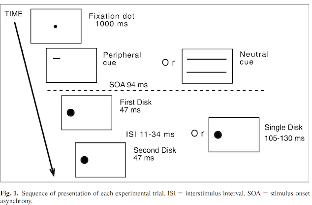

Replication of Study 1 by Yeshurun & Levy (2003). Transient spatial attention degrades temporal resolution. Psychological Science
Author
Irmak Ergin (irmak.ergin@stanford.edu)
Published
December 10, 2023
Introduction
Justification: My research program focuses on speech comprehension, in which considering temporal factors is essential. I am planning to work with degraded/noisy speech signals, adn one way to introduce noise is by adding multiple sound sources positioned in various locations. Considering this, learning more about spatial attention, as well as temporal attention, might provide me with useful insights. I was working on attention and auditory object recognition during my master’s, and paradigms in the field were heavily influenced by the literature on visual object recognition. Therefore, I hope to find inspiration through this rescue project.
Required Stimuli & Procedures:“Two flashes of light were presented successively to the same location, and we determined the minimal interval between the flashes at which they were still perceived as two separate flashes, rather than as a single continuous flash. The shorter this critical interval is, the higher the temporal resolution. This measurement of temporal resolution was combined with a direct manipulation of transient spatial attention. In half the trials, the cued trials, a peripheral cue indicated the target’s onset and location. This exogenous cue, a small horizontal bar, allowed observers to focus their attention, in advance, on the target location, and was assumed to capture attention in a stimulus-driven, automatic manner. In the rest of the trials, the neutral trials, two long horizontal lines indicated the target’s onset but not its location (i.e., the target was equally likely to appear at any location).” (Yeshurun & Levy, 2003, p.226)
Link to Repo: https://github.com/psych251/yeshurun2003_rescue/tree/main Link to RPubs: https://rpubs.com/irmak_ergin/1112970 Link to Original Paper: https://github.com/psych251/yeshurun2003_rescue/blob/main/original_paper/Yeshurun%20%26%20Levy(2003).pdf
Summary of prior replication attempt
#PSYCH251 1st Replication Project General summary of the prior replication attempt/original experiment: As in the original study, each observer’s threshold of temporal resolution were measured in two different conditions (cued and neutral). In cued trials, a periphery cue were presented before the target onset, which indicates the target’s location. While in neutral trials, neutral cue with no indication of the target’s location were presented.
The results from the original study was not replicated: * No main effect of cueing was observed in the prior replication attempt,unlike the original study. * The original study reported no interaction effect between cueing and ISI. Whereas, the first replication study found a significant interaction effect between cueing and ISI: In longer ISI conditions, spatial attention enhanced performance in the temporal resolution task, while in shorter ISI, spatial attention degraded the performance.
The original study had 18 participants while the 1st replication study had 10. The author of the 1st replication notes that this was due to not being able to reach out to enough Psych1 students as they were collecting data in-person.This might be the reason behind not being able to replicate the original study.
The original study did not report any exclusion from the sample. The 1st replication report states that no participant’s data was excluded from the study.
The original experiment and the 1st replication study have the same analysis methods but the replication study did not analyze the Reaction Time (RT) data. The original experiment did not find significant effects on RT.
#Forward Literature Search for Other Replication Attempts A forward literature search was conducted to find possible replication studies of the original paper, other than the 1st replication project done by Insub Kim for the PSYCH251 class. Chica & Christine (2009) Experiment 1: Using 12 participants, they replicated the finding that temporal resolution is impaired on spatially cued trials as compared with neutral trials, even when controlled for Reaction Time.
Methods
Power Analysis
The effect size is not reported in the original paper.The first replication study had 10 participants although it aimed to have 18 as in the original study. Therefore, I aim to get 18 participants following the number of participant reported in the original paper and see if I can replicate the findings.
Planned Sample
There will be no pre-selection rules except for normal or corrected-to-normal vision. I will recruit data from 18 PSYCH1 participants via a 2023 MacBook Pro. Participants will receive a course credit for participation.
Materials
Two-flash fusion threshold: Measure of temporal resolution. “Two flashes of light were presented successively to the same location, and we determined the minimal interval between the flashes at which they were still perceived as two separate flashes, rather than as a single continuous flash. The shorter this critical interval is, the higher the temporal resolution (e.g., Artieda, Pastor, Lacruz, & Obeso, 1992;Reeves, 1996).”
Target: The target (37-cd/m2 disk with a diameter of 3 degrees) was composed of two flashes of light separated by a brief interval or a single continuous flash. “It appeared on a black background at one of 11 possible locations along the horizontal meridian, with eccentricity (distance from the center) ranging from 0 to 16.5 degrees. The cue in the cued trials was a 1 X 0.3 degrees green horizontal bar (43 cd/m2) appearing 0.5 degree above the target’s location. In the neutral trials, two 17 x 0.3 degree green horizontal lines appeared above and below the entire display.”
(taken from the original paper & the first replication attempt report)
Procedure
I am planning to follow the exact procedure of the original study, used by the 1st replication attempt as well. Quoting from the original article:
“Each trial began with a fixation point followed by the attentional cue. The cue was present until the target’s offset, to prevent confusion between the flickering of the cue and that of the target. The target was presented 94 ms after onset of the cue: On 50% of the trials, two disks appeared, each for 47 ms, separated by a variable interval (inter stimulus interval, ISI, of 11–34 ms). On the rest of the trials, a single disk was presented for a duration ranging from 105 to 130 ms. These brief durations ensured that eye movements could not occur between cue onset and target offset (Mayfrank, Kimmig, & Fischer,1987). Each observer viewed 864 trials presented in a randomized order. Both accuracy and reaction time (RT) were recorded.”
 Link to experiment code: https://github.com/psych251/yeshurun2003_rescue/blob/main/data/spaital_temporal.m
Controls
What attention checks, positive or negative controls, or other quality control measures are you adding so that a (positive or negative) result will be more interpretable?
Analysis Plan
The original study do not mention any participant or data exclusion. Participants were required to have normal or corrected to normal vision.
“Dependent Variables:
Accuracy(d’) was calculated following equation: d’ = z(hit) - z(false alarm), (Macmillan & Creelman, 1991).
Criterion(c, measure of response bias) was calculated using: c = -0.5(z(hit) + z(false alarm)), (Macmillan & Creelman, 1991).
Reaction Time (RT)“*
Clarify key analysis of interest here
“- Differences between cued and neutral trials - The effect of inter-stimulus interval (ISI)”*
Key analysis: A within-subject three-way analysis of variance (ANOVA; Cuing x Eccentricity x ISI) will be performed on the accuracy (d’) and RT data collected on trials with correct responses. The original study does not state a directional hypothesis in the Introduction section, but in Experiment 1 it is written that ” …we reasoned that attending to the location of this temporal target might decrease temporal resolution. Alternatively, the effects of attention on temporal resolution might not be constrained by its effects on spatial resolution.” (p.226)
*Quoted sections are taken from the 1st replication report.
Differences from Original Study and 1st replication
Data collection and Participants: The only difference I can see is that the first replication study had 10 participants although it aimed to have 18 as in the original study. This was dues to collecting data in-person and not being able to find enough participants in time. I will be collecting data from PPSYCH1 students.
The 1st replication attempt collected but not analyzed RT data, unlike the original experiment. I will be analyzing the effects of cueing, ISI, and eccentricity on RT as well as on accuracy (d prime).
Methods Addendum (Post Data Collection)
Actual Sample
5 participants among PSYCH251 students.
Differences from pre-data collection methods plan
I was not able to find 18 naive participants as I planned to, and rather recruited data from 5 non-naive students. I am planning to recruit data from 18 PSYCH1 students on 2024 Winter Quarter.
Results
Data preparation
Link to data organization code (to be able to take transfer the data from MATLAB to R): https://github.com/psych251/yeshurun2003_rescue/blob/main/data/Mat2R.m
Data preparation plan: - Load the data - Cued and neural trials will be determined. (changing variable names to more “intuitive” ones) - Compute accuracy (d prime) value based on the equation stated in the analysis plan section. - Calculate the mean d primes per subgroups for analysis and plotting. E.g. for cuing conditions (cued vs neural), eccentricity x cue, ISI x cue, eccentricity x ISI. - Calculate the mean RTs per subgroups for analysis and plotting. E.g. for cuing conditions (cued vs neural), eccentricity x cue, ISI x cue, eccentricity x ISI.
The data preparation code below has taken from the first replication report with changes.
####Load Relevant Libraries and Functionslibrary(tidyverse)
── Attaching core tidyverse packages ──────────────────────── tidyverse 2.0.0 ──
✔ dplyr 1.1.3 ✔ readr 2.1.4
✔ forcats 1.0.0 ✔ stringr 1.5.0
✔ ggplot2 3.4.4 ✔ tibble 3.2.1
✔ lubridate 1.9.3 ✔ tidyr 1.3.0
✔ purrr 1.0.2
── Conflicts ────────────────────────────────────────── tidyverse_conflicts() ──
✖ dplyr::filter() masks stats::filter()
✖ dplyr::lag() masks stats::lag()
ℹ Use the conflicted package (<http://conflicted.r-lib.org/>) to force all conflicts to become errors
Attaching package: 'gridExtra'
The following object is masked from 'package:dplyr':
combine
library(cowplot)
Attaching package: 'cowplot'
The following object is masked from 'package:ggpubr':
get_legend
The following object is masked from 'package:ggthemes':
theme_map
The following object is masked from 'package:lubridate':
stamp
####Import datad <-read_csv("Pilot_B.csv")
Rows: 1080 Columns: 9
── Column specification ────────────────────────────────────────────────────────
Delimiter: ","
chr (2): sub, SDT
dbl (7): cue, numFlash, targetLoc, ISI, response, RT, accuracy
ℹ Use `spec()` to retrieve the full column specification for this data.
ℹ Specify the column types or set `show_col_types = FALSE` to quiet this message.
#### Prepare data for analysis - create columns and change variable names#Create a new column 'cue' in the dataset d. If the value in the 'cue' column is 1, it assigns 'cued', otherwise 'neutral' to the new 'cue' column.d$cue <-ifelse(d$cue ==1, 'cued', 'neutral')#Generate new subject names with the format "s0XX" (where XX is a two-digit number) for each unique subject in the 'sub' column and assign these new names to the 'sub' column in the dataset.x=1:length(unique(d$sub))new_subNames=sprintf("s0%02d",x)subNames =unique(d$sub)for(i in1:length(subNames)) { d$sub[d$sub == subNames[i]] = new_subNames[i]}end
function (x, ...)
UseMethod("end")
<bytecode: 0x10daf8db0>
<environment: namespace:stats>
#TargetLoc is the column with eccentricity information that are arbitraryly labeled from 1 to 6 in the stimulus creation code. The code below assigns back eccentricity values to 'targetLoc' labels. kk =sort(unique(d$targetLoc))mask1=d$targetLoc ==kk[1]mask2=d$targetLoc ==kk[2]mask3=d$targetLoc ==kk[3]mask4=d$targetLoc ==kk[4]mask5=d$targetLoc ==kk[5]mask6=d$targetLoc ==kk[6]d$targetLoc[mask1] =0d$targetLoc[mask2] =3d$targetLoc[mask3] =6d$targetLoc[mask4] =9d$targetLoc[mask5] =13d$targetLoc[mask6] =16#Convert 'cue,' 'targetLoc,' and 'ISI' columns in the dataset to factorsd <- d %>%mutate( cue =factor(cue),targetLoc =factor(targetLoc), ISI =factor(ISI))
#Make sub-selection of the data- RTdplot_cue_rt <- d %>%group_by(sub, cue) %>%summarize(mean_RT =mean(RT))
`summarise()` has grouped output by 'sub'. You can override using the `.groups`
argument.
dplot_ecc_rt <- d %>%group_by(cue, targetLoc) %>%summarize(mean_RT =mean(RT))
`summarise()` has grouped output by 'cue'. You can override using the `.groups`
argument.
dplot_ecc2_rt <- d %>%group_by(targetLoc, ISI) %>%summarize(mean_RT =mean(RT))
`summarise()` has grouped output by 'targetLoc'. You can override using the
`.groups` argument.
dplot_ISI_rt <- d %>%group_by(cue, ISI) %>%summarize(mean_RT =mean(RT))
`summarise()` has grouped output by 'cue'. You can override using the `.groups`
argument.
dplot_stat_ISI_rt <- d %>%group_by(sub, cue, ISI) %>%summarize(mean_RT =mean(RT))
`summarise()` has grouped output by 'sub', 'cue'. You can override using the
`.groups` argument.
dplot_ecc_sd_rt <- d %>%group_by(sub, targetLoc, ISI) %>%summarize(mean_RT =mean(RT))
`summarise()` has grouped output by 'sub', 'targetLoc'. You can override using
the `.groups` argument.
Results of control measures
There are no control measures planned for this study.
Confirmatory analysis
Following the original paper, and as it was done in the 1st replication attempt, a within-subject three-way analysis of variance (ANOVA; Cuing x Eccentricity x ISI) will be performed on the accuracy (d’) and RT data collected on trials with correct responses.
The key statistic of 3 way ANOVA anova was performed. The code below is taken by the first replication report.
###Accuracy# within-subject 3-way Anova on Accuracy (dPrime), testing the interaction of cue,eccentricity,and ISIResult_accuracy <-aov(dPrime ~ (cue*targetLoc*ISI) +Error(sub/cue*targetLoc*ISI), data=dp)summary(Result_accuracy)
Error: sub
Df Sum Sq Mean Sq F value Pr(>F)
Residuals 4 37.96 9.491
Error: targetLoc
Df Sum Sq Mean Sq
targetLoc 5 4.817 0.9634
Error: ISI
Df Sum Sq Mean Sq
ISI 2 40.7 20.35
Error: sub:cue
Df Sum Sq Mean Sq F value Pr(>F)
cue 1 0.0308 0.0308 0.071 0.804
Residuals 4 1.7476 0.4369
Error: sub:targetLoc
Df Sum Sq Mean Sq F value Pr(>F)
Residuals 20 12.32 0.616
Error: sub:ISI
Df Sum Sq Mean Sq F value Pr(>F)
Residuals 8 22.56 2.82
Error: targetLoc:ISI
Df Sum Sq Mean Sq
targetLoc:ISI 10 4.213 0.4213
Error: sub:cue:targetLoc
Df Sum Sq Mean Sq F value Pr(>F)
cue:targetLoc 5 4.81 0.9619 1.628 0.198
Residuals 20 11.82 0.5908
Error: sub:cue:ISI
Df Sum Sq Mean Sq F value Pr(>F)
cue:ISI 2 0.057 0.0285 0.058 0.944
Residuals 8 3.932 0.4915
Error: sub:targetLoc:ISI
Df Sum Sq Mean Sq F value Pr(>F)
Residuals 40 18.66 0.4666
Error: sub:cue:targetLoc:ISI
Df Sum Sq Mean Sq F value Pr(>F)
cue:targetLoc:ISI 10 4.044 0.4044 0.902 0.541
Residuals 40 17.944 0.4486
# main effect: Cuingsummary(Result_accuracy[5])
Error: sub:cue
Df Sum Sq Mean Sq F value Pr(>F)
cue 1 0.0308 0.0308 0.071 0.804
Residuals 4 1.7476 0.4369
# interaction effect: Cuing X ISIsummary(Result_accuracy[10])
Error: sub:cue:ISI
Df Sum Sq Mean Sq F value Pr(>F)
cue:ISI 2 0.057 0.0285 0.058 0.944
Residuals 8 3.932 0.4915
Error: sub
Df Sum Sq Mean Sq F value Pr(>F)
Residuals 4 1.778e-06 4.446e-07
Error: targetLoc
Df Sum Sq Mean Sq
targetLoc 5 3.925e-07 7.851e-08
Error: ISI
Df Sum Sq Mean Sq
ISI 2 1.061e-08 5.303e-09
Error: sub:cue
Df Sum Sq Mean Sq F value Pr(>F)
cue 1 3.320e-08 3.320e-08 2.433 0.194
Residuals 4 5.459e-08 1.365e-08
Error: sub:targetLoc
Df Sum Sq Mean Sq F value Pr(>F)
Residuals 20 8.057e-07 4.028e-08
Error: sub:ISI
Df Sum Sq Mean Sq F value Pr(>F)
Residuals 8 7.088e-07 8.86e-08
Error: targetLoc:ISI
Df Sum Sq Mean Sq
targetLoc:ISI 10 9.389e-07 9.389e-08
Error: sub:cue:targetLoc
Df Sum Sq Mean Sq F value Pr(>F)
cue:targetLoc 5 7.166e-07 1.433e-07 3.07 0.0324 *
Residuals 20 9.337e-07 4.669e-08
---
Signif. codes: 0 '***' 0.001 '**' 0.01 '*' 0.05 '.' 0.1 ' ' 1
Error: sub:cue:ISI
Df Sum Sq Mean Sq F value Pr(>F)
cue:ISI 2 2.022e-07 1.011e-07 1.866 0.216
Residuals 8 4.334e-07 5.418e-08
Error: sub:targetLoc:ISI
Df Sum Sq Mean Sq F value Pr(>F)
Residuals 40 3.489e-06 8.722e-08
Error: sub:cue:targetLoc:ISI
Df Sum Sq Mean Sq F value Pr(>F)
cue:targetLoc:ISI 10 9.314e-07 9.314e-08 1.302 0.262
Residuals 40 2.861e-06 7.153e-08
Error: Within
Df Sum Sq Mean Sq F value Pr(>F)
Residuals 900 6.771e-05 7.524e-08
# Main effect: Cuingsummary(Result_rt[5])
Error: sub:cue
Df Sum Sq Mean Sq F value Pr(>F)
cue 1 3.320e-08 3.320e-08 2.433 0.194
Residuals 4 5.459e-08 1.365e-08
# Interaction effect: Cuing X ISIsummary(Result_rt[10])
Error: sub:cue:ISI
Df Sum Sq Mean Sq F value Pr(>F)
cue:ISI 2 2.022e-07 1.011e-07 1.866 0.216
Residuals 8 4.334e-07 5.418e-08
The original paper found: For accuracy: - Significant main effect of cuing: F(1,17)=8.01 p<.01 - No significant interactions: Cuing X ISI, Cuing X Eccentricity, and ISI X Eccentricity - But the performance decrement in the cued trials was more pronounced for shorter ISIs (i.e., when a higher temporal resolution is required) than for longer ISIs and for more central, compared with more peripheral, eccentricities. For reaction time: -Effects on RTs were not statistically significant.
The 1st replication porject found: - No significant main effect of cuing: F(1,9)=2.061 p=.0185 - Significant interaction effect of Cuing X ISI: F(2,18)=10.86 p<.001 - Reaction time data was not analyzed
The rescue project (2nd replication) found: For accuracy: -Effects on accuracy were not statistically significant. For reaction time: - The was a significant interaction effect of Cueing X Eccentricity: F(5, 20) = 3.07, p = 0.032
There is a statistically significant difference between the neutral and cued groups for targetLoc6 (that is, the distance of the target from the center is 6°), and the positive estimate suggests that the mean for neutral is higher than the mean for cued.
A grouped bar plot to visualize the interaction effect:
# Convert 'cue' and 'targetLoc' to factors for correct plottingd$cue <-as.factor(d$cue)d$targetLoc <-as.factor(d$targetLoc)# Calculate summary statisticssummary_data <- d %>%group_by(cue, targetLoc) %>%summarise(mean =mean(RT), sd =sd(RT))
`summarise()` has grouped output by 'cue'. You can override using the `.groups`
argument.
# Create a grouped bar plot with error barsgrouped_bar_plot <-ggplot(summary_data, aes(x = targetLoc, y = mean, fill = cue)) +geom_bar(stat ="identity", position =position_dodge(width =0.8), width =0.7) +geom_errorbar(aes(ymin = mean - sd, ymax = mean + sd, group = cue),position =position_dodge(width =0.8), width =0.25,size =0.7 ) +labs(title ="Grouped Bar Plot",x ="targetLoc",y ="Reaction Time (RT)",fill ="Cue") +theme_minimal()
Warning: Using `size` aesthetic for lines was deprecated in ggplot2 3.4.0.
ℹ Please use `linewidth` instead.
# Display the plotprint(grouped_bar_plot)
Discussion and the Summary of Replication Attempt
Yeshurun & Levy (2003) found significant main effect of cueing on accuracy. The authors’ interpretation of the results is as follows: Directing attention to the target location negatively impacted observers’ abilioty to discern the temporal gap. This decline in performance might be attributed to the side effect of spatial attention improving the spatial resolution: The authors propose that the enhancement of spatial resolution by spatial attention might lead to a trade-off with temporal resolution, ultimately resulting in a detrimental impact on the latter. There were no significant effects on reaction time (RT) The first replication attempt, on the other hand, found no significant main effect of cueing on accuracy but a siginificant interaction of cueing and inter stimulus interval (ISI). The result showed that in longer ISI conditions, spatial attention enhanced performance in the temporal resolution task, while in shorter ISI, spatial attention degraded the performance. Specifically, the post-hoc test of paired t test revealed that spatial attention enchanced the task performance in ISI of 11 ms, while spatial attention degraded the task performance in ISI of 35 ms. The effects on RT was not tested on the first replication attempt.
The second replication attempt found no significant main effect of cueing on accuracy as well. Furthermore, there was no significant interaction effects on accuracy. There were no significant main effects on RT but a significant interaction effect of cueing and eccentricity. A post-hoc analysis revealed that there is a significant difference between neutral and cued groups for targetLoc6; that is, when the distance of the target from the center is 6°), mean RT being higher for neutral compared to cued trials. Overall, non of the results replicate across the original study and two replication attempts. This is might be due to different samples sizes employed in these three studies: While the original study had 18 participants, the first replication attempt had 10, and the second one had 5. It should be also noted that the original study was replicated by Chica & Christie (2009) with 12 participants. Therefore, to make a meaningful interpretation about the replicabilty of the original experiment, a replication attempt with more participants is needed.
Mini meta analysis
HERE The effect size was not reported on the original study. Therefore, I calculated the the aggregate effect size using the effect sizes of the first and second replications for the key analysis (3 way ANOVA on accuracy- main effect of cueing).
#Calculate effect size for second replication# Given values from ANOVA outputss_cue <-1.534ss_residuals <-10.557# Calculate partial eta-squaredeta_squared <- ss_cue / (ss_cue + ss_residuals)eta_squared<-round(eta_squared, 2)# Print the result with two decimal placescat("Partial Eta-squared for cue:",eta_squared, "\n")
Partial Eta-squared for cue: 0.13
#Calculate effect size for second replication## Given values from ANOVA outputss_cue_2 <-0.030803ss_residuals_2 <-1.747621## Calculate partial eta-squaredeta_squared_2 <- ss_cue_2 / (ss_cue_2 + ss_residuals_2)eta_squared_2 <-round(eta_squared_2, 2)## Print the result with two decimal placescat("Partial Eta-squared for cue:",eta_squared_2, "\n")
Partial Eta-squared for cue: 0.02
# Calculate aggregate effect size (average)aggregate_effect_size <- (eta_squared+ eta_squared_2) /2# Print the result with two decimal placescat("Aggregate Effect Size for cue across two experiments:", round(aggregate_effect_size, 2), "\n")
Aggregate Effect Size for cue across two experiments: 0.07
Commentary
Non of the results are replicated across three experiments (the original study, the first replication attempt. and the second replication attempt). This might be resulting from the low sample sizes of the replication studies. I want to note that I was not able to find 18 naive participants as I planned to, and rather recruited data from 5 non-naive students. I am planning to recruit data from 18 PSYCH1 students on 2024 Winter Quarter.